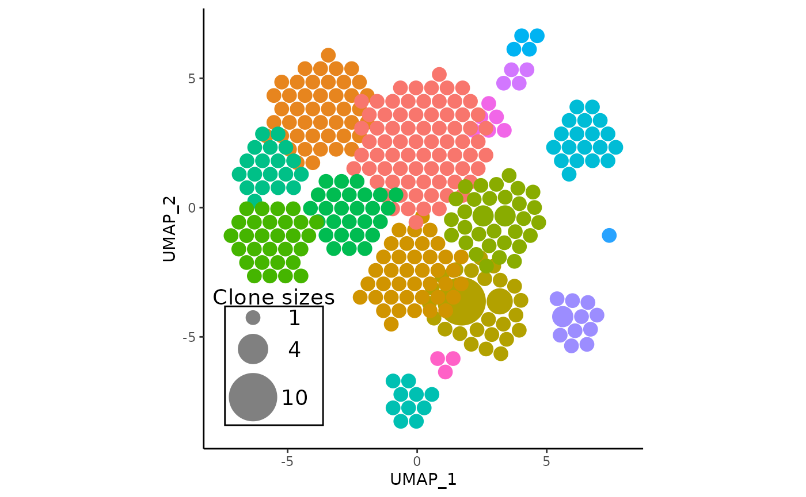
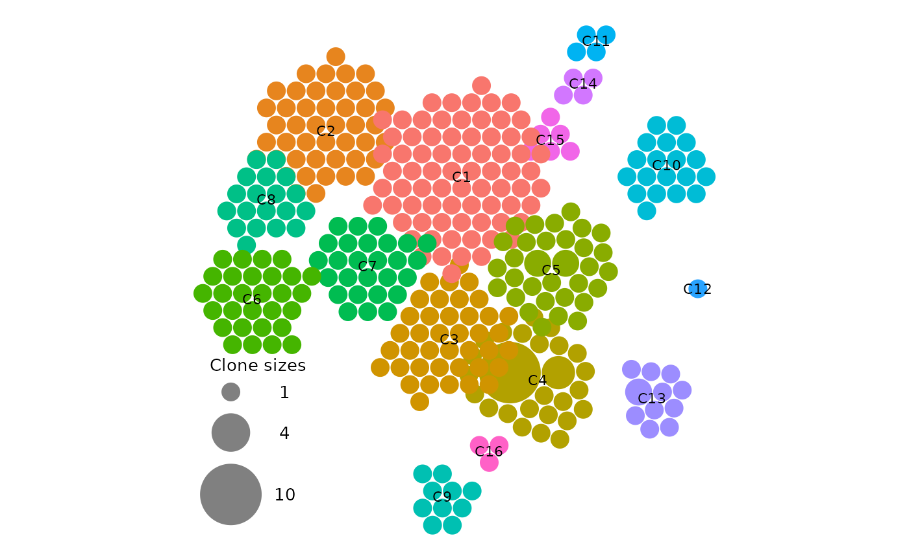

Introduction
Single-cell RNA sequencing (scRNA-seq) and T/B cell receptor (TCR)
sequencing are popular techniques for studying immune cell function and
disease. The combined use of such data can provide valuable insights
into the immune system, including clonal expansion.
APackOfTheClones provides a simple, easily customizable,
and publication-ready method to intuitively visualize clonal expansion
between different cell clusters with ggplot2, and can be
easily slotted into any analysis pipeline.
The method counts clonotypes, and using a dimensional reduction (e.g. UMAP) of all cells in a single cell immune profiling experiment as a base, it circle-packs all clone sizes directly as circles within circular clusters according to its seurat cluster. The advantage of this method compared to other (very limited) visualizations of clonal expansion out there is that its arguably much more intuitive. To see it in action, see this paper and this paper.
Basic familiarity with the R language, the
Seurat package, and the scRepertoire package
VERSION TWO is assumed. As version two of
scRepertoire is relatively new and introduces some small
breaking changes, it is essential that its new vignettes are
read.
In this vignette, the most essential functionalities of the package are covered, from preparing the data with scRepertoire, to producing and fine-tuning a barebones visualization of clonal expansion.
Setting up the Seurat Object and Receptor Library with scRepertoire
The premise of the package is that it provides an additional analysis
tool on top of scRepertoire’s many functions, which are all
ran after combining all TCR/BCR contigs into clones, and integrating the
clonal information into a seurat object with a dimensional reduction(s).
Here are the corresponding vignettes to read in order for combining
contigs:
And here is a practical example on how to generate a combined seurat
+ VDJ object to be used in the vignette named pbmc, which
is also identical to the built-in example dataset
combined_pbmc which can be loaded with
data("combined_pbmc", package = "APackOfTheClones"):
library(scRepertoire)
# load in the corresponding 6-sample TCR contigs from scRepertoire
contig_list <- get(data("contig_list", package = "scRepertoire"))
# combine the TCR contigs into clones with custom samples
combined_contig_list <- scRepertoire::combineTCR(
contig_list,
samples = c("P17B", "P17L", "P18B", "P18L", "P19B", "P19L", "P20B", "P20L"),
removeNA = FALSE,
removeMulti = FALSE,
filterMulti = FALSE
)For integrating the clonal information,
scRepertoire::combineExpression is the function used to
do so, but for APackOfTheClones the scRNA-seq object
has to be a seurat object:
# a seurat object corresponding to combined_contig_list named `pbmc` is loaded
pbmc <- scRepertoire::combineExpression(
combined_contig_list,
pbmc,
cloneCall = "gene",
proportion = TRUE
)And as a reference, here is the corresponding UMAP plot of the seurat object
Simple ball packing visualization
vizAPOTC (short for “visualize APackOfTheClones”) is the
main convenience function of the package to directly produce the ball
packing clonal expansion plot. It takes in a main argument of a combined
seurat object (with a long list of optional arguments which will be
covered in later sections), and outputs a ggplot object:
default_apotc_plot <- vizAPOTC(pbmc, verbose = FALSE)
default_apotc_plot
Key characteristics of the plot
- One should notice the immediate correspondence of circular clusters to umap clusters, and be able to derive some immediate insights about which clusters have expanded.
- The clonotype counts for each seurat cluster corresponds to their position and color in the original UMAP centroids
- The most expanded clonotypes are in the center of each circle cluster with larger sizes, symbolizing increased expansion
- On the plot, there is a somewhat imperfect visual legend of the relative clone sizes
- Some clusters have considerable visual overlap
- The returned plot is a fully customizable
ggplotobject
The resulting clonal expansion plot may not be visually satisfactory
on the first run without customizations from optional arguments. These
arguments and other ggplot tricks will be covered to
fine-tune the visualization until publication-ready.
Working with different reduction bases and clonal representations
The arguments to do so are:
reduction_base indicates what each seurat cluster’s
centroid locations should be based upon, so UMAP, T-SNE, or PCA
(provided the reduction has been ran on the object).
clonecall corresponds to which column in the seurat
metadata should be used to conduct the clonotype counting. These are
usually columns generated by combineTCR/BCR but can be custom columns
too. Note that scRepertoire should generate the following
columns by default, and the brackets indicate equivalent names one can
pass into the clonecall parameter:
- CTgene (gene, genes)
- CTnt (nt, nucleotide, nucleotides)
- CTaa (aa, amino)
- CTstrict (strict, gene+nt)
Switching this parameter could be useful if the user had generated a custom definition of clones and added it to the meta data, or if BCR clonal data is present, since the definition of a clone for B-cells isn’t as clear as it is for TCRs.
Lastly, by default, clonotypes are grouped into clusters based on the
current active identity of all cells (Idents(pbmc)) which
is the case when alt_ident = NULL. However, to work with
some alternative ident that was added to the seurat metadata either
manually or via Seurat::StashIdent, simply set
alt_ident to a character representing the name of that
column.
Working With a Data Subset
A novel feature of version 1 is the ease of running APackOfTheClones for subsets of the full dataset, which may be useful in cases like the need for clonal expansion plotting for only certain samples or conditions. There are two arguments to do so:
... represents an arbitrary number of additional keyword
arguments indicating the rows corresponding to elements in the seurat
object metadata that should be filtered by. For example, seurat_clusters
= c(1, 9, 10) will filter the cells to only those in seurat clusters 1,
9, and 10. extra_filter is another additional way to subset
the data and should be formatted exactly like a statement one
would pass into dplyr::filter that does additional
filtering to cells in the seurat object.
Here is an example of the data subsetting, where only samples in the
example seurat object that correspond to sample 17, 18, and 19 are
plotted, alongside the original plot to see the difference. Optionally,
it may sometimes be helpful to set one of the visual parameters
retain_axis_scales to TRUE, extending the
output plot’s dimensions if needed to approximately match the
corresponding reduction plot’s dimensions:
# `orig.ident` is a custom column in the example data with levels corresponding to sample ids:
# ("P17B" "P17L" "P18B" "P18L" "P19B" "P19L" "P20B" "P20L"). Here, it is subsetted
# by the keyword argument approach
subset_sample_17_plot <- vizAPOTC(
pbmc,
orig.ident = c("P17B", "P17L"),
retain_axis_scales = TRUE,
add_size_legend = FALSE,
verbose = FALSE
)
# here, it is subsetted with `extra_filter` for sample 18 with dplyr syntax:
subset_sample_18_plot <- vizAPOTC(
pbmc,
extra_filter = "substr(orig.ident, 1, 3) == 'P18'",
retain_axis_scales = TRUE,
add_size_legend = FALSE,
verbose = FALSE
)
# here, sample 19 is subsetted with both arguments to show that they work in conjunction
subset_sample_19_plot <- vizAPOTC(
pbmc,
orig.ident = "P19B",
extra_filter = "orig.ident == 'P19L' | orig.ident == 'P19B'",
retain_axis_scales = TRUE,
add_size_legend = FALSE,
verbose = FALSE
)
cowplot::plot_grid(
vizAPOTC(combined_pbmc, add_size_legend = FALSE, verbose = FALSE),
subset_sample_17_plot,
subset_sample_18_plot,
subset_sample_19_plot,
labels = c("all", "17", "18", "19")
)
A Note on Subsetting Data
The subsetting parameters are barely more than syntactic sugar to
subset the seurat metadata and dimensional reduction coordinates, and
serves as a convenience to the user if they want to quickly generate
insights. Generally, if the analysis of data subsets (such as certain
samples, or condition, etc.) is crucial to a publication, one would
likely already be working with fully subsetted seurat objects, and
APackOfTheClones functions can be directly applied in those cases. See
the corresponding Seurat vignette("essential_commands")
for details.
Customization of Visual Parameters
Visually Scaling Circle Sizes
For each seurat cluster at index \(i\), the final radii \(r_{ij}\) of each physical circle at index \(j\) representing clone size \(s_{ij}\) is calculated with a clone size scaling factor \(C \in (0, \infty)\) and a radius scaling factor \(R \in (0, 1]\) with the following formula:
\[ r_{ij} = C \cdot (\sqrt{s_{ij}} - (1 - R)) \]
Intuitively, \(C\) represents how
much to enlarge/shrink each radius geometrically relative to the clone
size, whereas \(R\) represents the
scaled size of the smallest clone’s radius, and all circles will have
their radii decreased by that amount. \(R\) defaults to 0.95, whereas \(C\) defaults to an approximated factor
based on the number of clones that the package computes. The
corresponding arguments are clone_scale_factor and
rad_scale_factor in vizAPOTC.
Cluster Repulsion
Considerable visual overlap between clusters (due to the algorithm’s attempt to fit clusters to the original UMAP coordinates) may occur and obstruct eachother excessively. APackOfTheClones by default tries to alleviate this by repulsing overlapping clusters away from eachother. There are four optional arguments:
-
repulsion_thresholdindicates the amount ofggplot2units of overlap between clusters that are acceptable. It defaults to1, meaning that two clusters that overlap by about 1 unit are considered by the repulsion algorithm to not be overlapping. Increasing this number will increase the amount of overlap between clusters, and decreasing this number will do the opposite, while decreasing it to negative values will incur additional spacing between clusters. Note that as of the current version, two clusters are considered overlapping by comparing their approximated radii, which is computed from the right-most x coordinate. This isn’t a very accurate approximation for smaller clusters with non-circular borders. -
repulsion_strengthrelates to how much the clusters should repel each other. The repulsion algorithm works in iterations, where for each iteration, each cluster “pushes” each other away from eachother by some amount. Increasing this value will cause extra “pushing” during each iteration. However, increasing this factor too much may result once again in a very visually unpleasant plot. -
max_repulsion_iterindicates the number of iterations where clusters should repel eachother. Increasing this number would ensure that clusters will (almost always) for sure not be overlapping. A trick with this parameter to make more pleasant plots is to decreaserepulsion_strengthand increasemax_repulsion_iterto possibly make a more pleasant arrangement of clusters.
For more details on them, read the “Arguments” section in the
function documentation. Briefly, first, to make the circle clusters move
away from eachother, repulse should be set to
TRUE, and the function should be ran AGAIN. (If you feel
this excessive re-running takes too long or is inefficient for your
workflow in its current form due to a constant need to fine-tune, see
the vignette APackOfTheClones-runs.)
Managing the Clone Size Legend
There are the following six parameters to adjust the legend:
add_size_legend = TRUE,
legend_sizes = "auto",
legend_position = "auto",
legend_buffer = 0.2,
legend_color = "#808080",
legend_spacing = "auto",
legend_label = "Clone sizes",
legend_text_size = 5,
add_legend_background = TRUE,legend_sizes are autogenerated, with at least sizes for
clone size 1 and max(clone sizes). The user can also input whichever
sizes they wish as a numeric vector. The legend_position on
the plot defaults to one of the four corners, whichever will result in
the least overlap of the legend with circles present. Otherwise, the
user can input manually "top left",
"top right", "bottom left"
"bottom right, or just a numeric indicating the x and y
coordinates of the top leftmost corner of the legend.
add_legend_background will display a rectangular background
to the legend. The other parameters are less relevant and more details
about these arguments can be read in the function documentation.
Note that the functions overlayLegend and
removeLegend also exist for adding/removing legends on a
readily generated plot.
Other Modifications
A collection of other utility parameters are:
order_clones = TRUE,
try_place = FALSE,
res = 360L,
linetype = "blank",
use_default_theme = TRUE,
retain_axis_scales = FALSE,
show_labels = FALSE,
label_size = 5,The most important of which are 1. show_labels which
overlays the seurat cluster on the plot in the format "Cx"
in the center of each relevant cluster. (see
vignette("APackOfTheClones-runs") on how one can modify
them) 2. use_default_theme which will produce a plot that’s
thematically very similar to the dimensional reduction plot, with axis
labels and numeric ticks on each axis. This may be helpful for visually
indicating certain plot parameters. However, for publications such as this one,
as the numeric ticks in APackOfTheClones have no actual biologically
relevant meaning aside from approximately matching clusters, it may be
beneficial to set this argument to FALSE which will produce
a plot with just the circles. The following is an example parameters to
generate a plot that is likely publication-ready:
vizAPOTC(
pbmc,
repulsion_threshold = 0.9,
show_labels = TRUE,
label_size = 3,
legend_text_size = 3.5,
add_legend_background = FALSE,
use_default_theme = FALSE,
verbose = FALSE
)
Conclusion
That’s about it for the most basic functionalities of the clonal
expansion visualization function. It’s strongly
recommended to save the plot first as an .svg
file with ggplot2::ggsave for maximal resolution
(especially of the circles) for publication.
For users that need to fine-tune plot parameters and/or save the data
within the seurat object for readjustment/replotting, please read the
vignette("APackOfTheClones-runs").
For inspiration of how it could practically look like in a real paper context, see the following papers where the original julia implementation of APackOfTheClones was successfully used: